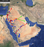
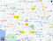

Young Apple and random reading
Random reading can be a useful experience to do.

This french artist below is called Medine
while listening to him viewing this youtube video
Medine reminded me that I have not published an article today and the title of this post is inspired by his hip hop lyrics. Medine is right That’s how this world works :
Some give you the gut to understand things
Some provide you the gut to do them.
To stay into the topic I could share the work that I was doing today, plotting things on a map, and here is the map

Those who have a clear sight of geography could already see that I am still On the topic because of this City. And let me just tell you something else about me. I am now writing this article from here

Yes, this is another clue for telling that I am trying to stay into the topic. You can see this article as just a way of saying yes, I did it, to mean I have written and published an article not because I have something to say but because it is today. I am trying to stick to the practice of writing and sharing ideas every day. I am not sure that with this article you could extract an interesting one but who knows. Whatever I have just written and published this because it is today and hope you and me will be there tomorrow and I will write and publish again. Maybe you will have time to read me again but if not you already have my thanks.
PS: the map in this article will likely be part of a data-driven book that will be published by Book Dojo. Random reading can be a useful experience to do. you can engage with book Dojo by filling this form.